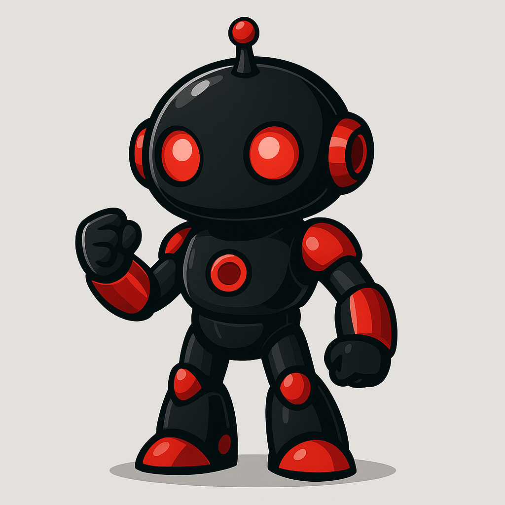

Olá! Sou um desenvolvedor Front-End apaixonado por transformar ideias em experiências digitais incríveis. Aqui você encontrará alguns dos meus projetos, onde aplico minhas habilidades em HTML, CSS, JavaScript e outras tecnologias modernas para criar interfaces interativas e responsivas. Sinta-se à vontade para explorar meu trabalho e, se precisar de algo, estou à disposição! Vamos construir algo incrível juntos!
"A tecnologia sempre me fascinou, não apenas pelo que ela pode fazer, mas pelo impacto que causa na vida das pessoas. Como desenvolvedor front-end, minha missão vai além de escrever código; é sobre criar experiências digitais envolventes, intuitivas e acessíveis. Combinando criatividade e lógica, transformo ideias em interfaces funcionais e atraentes, garantindo que cada detalhe contribua para uma navegação fluida e impactante. Acredito que inovação e usabilidade devem caminhar juntas, proporcionando soluções que realmente fazem a diferença. Se você busca alguém apaixonado por desafios e comprometido com a excelência, estou pronto para construir algo incrível ao seu lado."
"Desde pequeno, fui fascinado pelo mundo digital. A primeira vez que escrevi algumas linhas de código, percebi que a tecnologia poderia ser minha ferramenta para transformar ideias em realidade. Hoje, como desenvolvedor front-end, canalizo essa paixão para criar interfaces intuitivas, dinâmicas e acessíveis. Acredito que cada pixel conta e que o design deve ser tão funcional quanto bonito. Estou sempre em busca de inovação, aprendizado e desafios que me permitam crescer. Se você valoriza soluções criativas e impactantes, vamos juntos construir um futuro digital mais inspirador."
Como desenvolvedor Front-End, estou pronto para transformar ideias em realidade! Especializado na criação de landing pages modernas, responsivas e otimizadas para conversão, utilizo as melhores tecnologias para garantir um design atrativo e funcional. Além disso, possuo experiência com desenvolvimento em GDScript e Python, agregando ainda mais valor aos projetos.
HTML
CSS
JavaScript
Front-End
VS Code
Python
GDScript
Ficou interessado? Me mande uma mensagem!